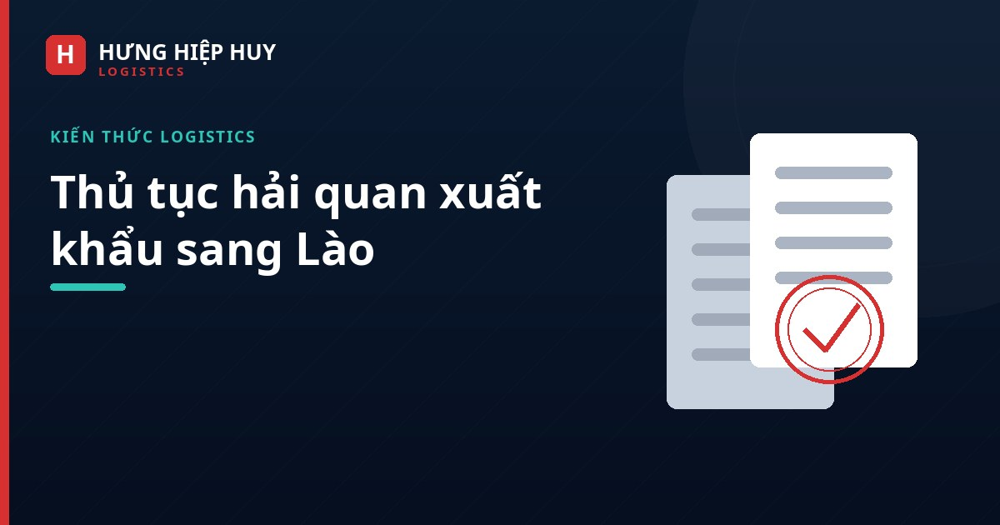

Thủ tục hải quan xuất khẩu sang Lào: quy trình và lưu ý

Xuất khẩu hàng hóa sang Lào bằng đường bộ qua các cửa khẩu miền Trung là tuyến quen thuộc của nhiều doanh nghiệp Đà Nẵng và miền Trung. Tuy nhiên, thủ tục hải quan hai phía — xuất khẩu tại Việt Nam và nhập khẩu tại Lào — vẫn là khâu khiến nhiều doanh nghiệp lúng túng, đặc biệt khi lần đầu xuất hàng. Bài viết này tổng hợp quy trình chung và những lưu ý thực tế để lô hàng thông quan suôn sẻ.
1. Chuẩn bị hồ sơ trước khi xuất hàng
Chuẩn bị hồ sơ đầy đủ và chính xác là bước quan trọng nhất. Bộ hồ sơ xuất khẩu sang Lào thường bao gồm:
- Hóa đơn thương mại (Commercial Invoice): ghi rõ người bán, người mua, mô tả hàng hóa, số lượng, đơn giá, tổng giá trị và điều kiện giao hàng.
- Phiếu đóng gói (Packing List): chi tiết số kiện, trọng lượng, kích thước, cách đóng gói của từng kiện hàng.
- Hợp đồng mua bán (Sales Contract): nếu có, để đối chiếu thông tin giao dịch.
- Giấy chứng nhận xuất xứ (C/O): nếu hàng hóa được hưởng ưu đãi thuế quan theo hiệp định thương mại giữa Việt Nam và Lào hoặc ASEAN.
- Giấy phép chuyên ngành: đối với hàng hóa thuộc diện quản lý chuyên ngành (thực phẩm, dược phẩm, hóa chất, máy móc đặc thù…).
- Vận đơn / giấy tờ vận tải: tùy phương thức vận chuyển và thỏa thuận giữa các bên.
Lưu ý: thông tin trên các chứng từ phải thống nhất với nhau — tên hàng, số lượng, trọng lượng, giá trị. Sai lệch nhỏ giữa hóa đơn và phiếu đóng gói cũng có thể khiến hồ sơ bị yêu cầu giải trình, kéo dài thời gian thông quan.
2. Khai báo hải quan xuất khẩu tại Việt Nam
Quy trình khai báo hải quan xuất khẩu tại Việt Nam được thực hiện trên hệ thống hải quan điện tử. Các bước cơ bản:
- Khai báo tờ khai xuất khẩu: khai đầy đủ thông tin hàng hóa, mã HS, thuế suất, trị giá, phương tiện vận chuyển và cửa khẩu xuất.
- Nộp hồ sơ và chờ phân luồng: hệ thống phân luồng tờ khai (luồng xanh, vàng, đỏ) tùy mức độ rủi ro. Luồng xanh được thông quan ngay; luồng vàng cần kiểm tra hồ sơ; luồng đỏ cần kiểm tra thực tế hàng hóa (kiểm hóa).
- Hoàn thành nghĩa vụ thuế, phí: nộp các khoản thuế, phí theo quy định (nếu có).
- Thông quan: sau khi được chấp nhận, hàng hóa được phép xuất khỏi Việt Nam và vận chuyển đến cửa khẩu.
Việc xác định mã HS đúng là khâu then chốt: mã HS sai dẫn đến thuế suất sai, có thể bị truy thu hoặc xử phạt. Nếu chưa chắc chắn, doanh nghiệp nên tham khảo ý kiến của đơn vị khai báo hải quan có kinh nghiệm trước khi khai.
3. Thủ tục nhập khẩu tại Lào
Khi hàng đến cửa khẩu phía Lào, cần làm thủ tục nhập khẩu theo quy định của Lào. Người nhập khẩu tại Lào (hoặc đại diện được ủy quyền) cần chuẩn bị hồ sơ nhập khẩu, khai báo và nộp thuế nhập khẩu theo quy định của Lào.
Một số lưu ý thực tế:
- Doanh nghiệp nên xác nhận trước với đối tác phía Lào về thủ tục và thuế nhập khẩu áp dụng cho mặt hàng của mình — tránh tình trạng hàng đến cửa khẩu rồi mới phát hiện thiếu giấy tờ hoặc thuế cao hơn dự kiến.
- Giấy chứng nhận xuất xứ (C/O) đúng mẫu và hợp lệ có thể giúp hàng hóa được hưởng ưu đãi thuế quan, giảm đáng kể chi phí nhập khẩu.
- Thời gian làm thủ tục tại cửa khẩu Lào phụ thuộc vào mức độ đầy đủ của hồ sơ và loại hàng hóa. Hồ sơ chuẩn giúp rút ngắn thời gian chờ của xe.
4. Những lỗi thường gặp khiến hàng bị giữ tại cửa khẩu
- Thông tin chứng từ không khớp: hóa đơn, phiếu đóng gói và tờ khai có số liệu khác nhau.
- Sai mã HS: dẫn đến thuế suất sai, phải khai bổ sung hoặc bị xử phạt.
- Thiếu giấy phép chuyên ngành: hàng thuộc diện quản lý nhưng không có giấy phép đi kèm.
- C/O không hợp lệ: sai mẫu, hết hạn, hoặc thông tin không khớp với lô hàng.
- Đóng gói, nhãn mác không đúng quy định: hàng hóa không có nhãn hoặc nhãn thiếu thông tin theo yêu cầu.
- Khai báo trễ: khai báo sát giờ xe chạy khiến không kịp xử lý phát sinh, xe phải chờ tại cửa khẩu.
Điểm chung của các lỗi này là đều có thể phòng tránh bằng cách chuẩn bị sớm và kiểm tra kỹ hồ sơ trước khi xe lăn bánh.
5. Khi nào nên thuê đơn vị khai báo hải quan?
Doanh nghiệp xuất khẩu lần đầu, hàng hóa có tính chất đặc thù (hàng kiểm định, hàng cần giấy phép), hoặc lô hàng giá trị lớn nên cân nhắc thuê đơn vị khai báo hải quan chuyên nghiệp. Đơn vị khai báo sẽ chịu trách nhiệm chuẩn bị hồ sơ, xác định mã HS, khai báo và xử lý phát sinh — giúp doanh nghiệp tiết kiệm thời gian và hạn chế rủi ro. Kết hợp khai báo hải quan với vận chuyển trọn gói trong một đầu mối còn giúp quy trình liền mạch hơn, vì đơn vị vận chuyển nắm rõ lịch xe và tình hình cửa khẩu.
Kết luận
Thủ tục hải quan xuất khẩu sang Lào không phức tạp nếu doanh nghiệp chuẩn bị hồ sơ đầy đủ, xác định đúng mã HS và nắm rõ quy trình hai phía. Chìa khóa là chuẩn bị sớm, kiểm tra kỹ và phối hợp chặt với đối tác phía Lào cũng như đơn vị vận chuyển.
Cần hỗ trợ khai báo hải quan xuất khẩu sang Lào?
Liên hệ Hưng Hiệp Huy Logistics — Hotline/Zalo: 0901 995 6650 — Email: hiepnguyen.hunghiephuy@gmail.com. Chúng tôi hỗ trợ trọn gói khai báo hải quan và vận chuyển Việt – Lào.
Bài viết liên quan: Xuất khẩu đi Lào cần giấy tờ gì? · Các cửa khẩu Việt – Lào doanh nghiệp xuất khẩu nên biết